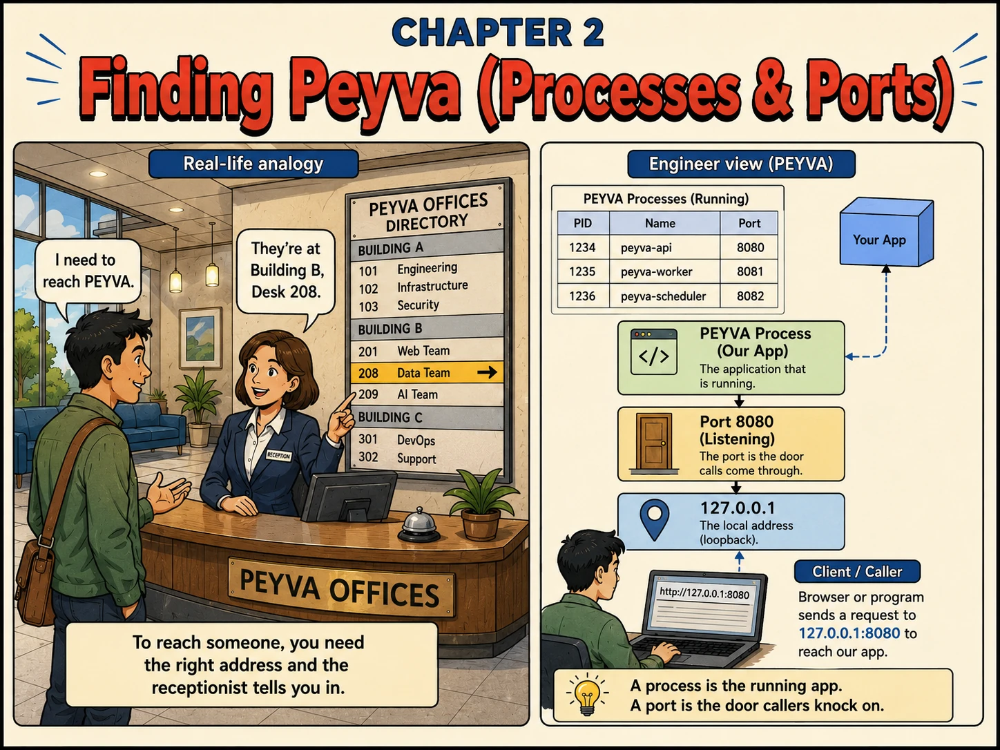

Chapter 2
Finding Peyva (Processes & Ports)
To reach someone, you need the right address and the receptionist lets you in.

1. Intuition
- Your computer runs many programs at once, like an office building holds many teams.
- Reaching one specific program needs an address (127.0.0.1) and a port. Something peyva doesn't have yet.
- This chapter gives it a door to knock on.
2. Concepts
- Process ID (PID). A number the OS assigns to identify one running program among many.
- Port. A number (like 9310) a process binds to, so the OS knows where to route calls.
- Binding. A process claiming a port on an address. By default the OS hands that pair to one process at a time, which is why the second copy is refused.
- Loopback (127.0.0.1). The address meaning 'this same machine', used to reach a process running locally.
- Gateway. The component that holds the port and takes requests from outside, the system's one front door.
3. Under the Hood
- Every peyva process has a PID and, once it listens, a port (e.g. peyva-api on 9310).
- A client reaches peyva at 127.0.0.1:9310, address plus port.
- The port is the door; the process behind it decides what happens when someone knocks.
4. Build It Hands-on Building in Go, change in Chapter 0
- Build the Gateway: the way requests reach the system from outside.
Constrain the scope. Assistants overengineer by default: extra files, abstractions, flexibility nobody asked for. The remedy is to state the ceiling explicitly. Ask for a listener without one and you'll get an HTTP server with routes and JSON.
Documented in Anthropic: Prompting best practices, Overeagerness
Build this in Go, using its standard library.
Continue the same codebase you built in earlier chapters.
Build the Gateway, the way payment requests reach the system from outside.
For now it does one thing: claim TCP port 9310, accept connections, log one line per connection with the caller's address, then close it.
Do not add HTTP handling, routes, JSON parsing, request or response types, graceful shutdown, or any third-party package. The Gateway only owns a door right now. Everything else arrives in later chapters and would get in the way.
The right amount of complexity is the minimum that does what I just described.
Done when a request to port 9310 makes the Gateway log a connection, and starting a second copy fails with 'address already in use'.
5. Break It Test it
- An address and port have one owner at a time. See what happens when two processes want the same door.
- Start peyva once. It binds port 9310 successfully.
- Start a second copy while the first is still running. Watch it fail with 'address already in use'.
- Stop the first copy, then start the second again: now it succeeds. The port was free the moment its owner let go.
Quick tip: One process holds a given address and port at a time. That is what makes it somewhere you can reliably knock.